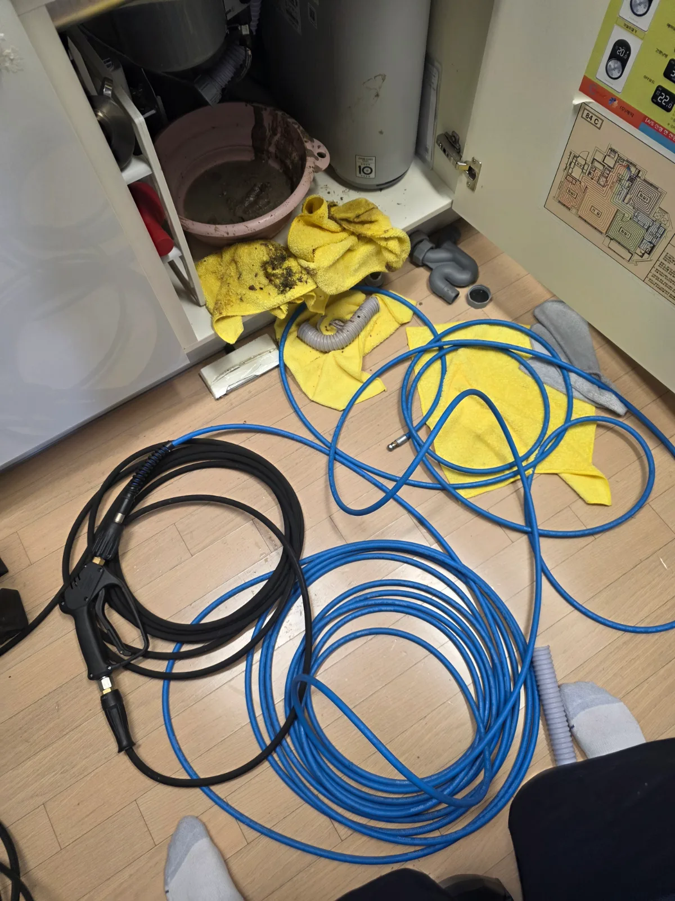

서울 강남구 개포동 싱크대막힘, 현장 도착 후 진단
서울 강남구 개포동에서 진행한 싱크대막힘 현장입니다. 이번에는 싱크대 아래 배수 연결부를 분리하고, 이어지는 배관 안쪽을 내시경으로 살펴봤습니다.
화면에는 관벽을 따라 두껍게 붙은 축적물이 보였습니다. 물이 지나가야 할 통로 안으로 덩어리가 돌출돼 있었습니다. 싱크대 위에서 거름망만 청소해서는 닿을 수 없는 곳에 문제가 있었던 겁니다.
싱크대 물이 잘 내려가지 않을 때 거름망의 찌꺼기를 먼저 비워보는 것은 좋습니다. 하지만 거름망이 깨끗한데도 증상이 계속된다면 하부 연결부와 배관 내부까지 확인해야 원인에 맞는 작업을 선택할 수 있습니다.
1단계: 증상 확인과 필요한 장비 작업
배관 입구 아래에 받침 용기를 놓고 주변에 수건을 깐 뒤 샤프트 작업을 시작했습니다. 관 안쪽에 붙은 축적물을 떨어뜨리는 배관스케일링 과정입니다.
작업을 이어가자 샤프트에 걸쭉한 슬러지가 묻어 나왔습니다. 받침 용기에도 오염수와 덩어리진 찌꺼기가 모였습니다. 내시경 화면으로 보던 물질을 밖에서 확인하니 배관이 왜 답답했는지 이해가 됩니다. 싱크대 아래에 반갑지 않은 적금이 쌓여 있었네요.
이번 작업의 초점은 좁은 물길만 내는 데 있지 않았습니다. 통로를 차지하고 있던 축적물을 제거하고, 이후 세척으로 이어갈 수 있도록 배관 내부를 정리했습니다.

2단계: 원인 구간 처리와 정상 작동 확인
샤프트 작업 후에는 고압세척을 진행했습니다. 샤프트로 관벽의 축적물을 떨어뜨린 다음, 물을 이용해 남은 찌꺼기를 씻어내는 순서로 작업했습니다.
샤프트를 썼는데 고압세척도 필요한가요? 두 작업은 역할이 다릅니다. 샤프트는 붙어 있는 축적물을 기계적으로 제거하는 데 사용하고, 고압세척은 물을 분사해 배관 내부를 세척합니다. 이번 개포동 현장에서는 두 방법을 이어서 적용했습니다. 다만 모든 싱크대막힘에 두 장비가 필요한 것은 아니며, 배관 구조와 축적 상태에 따라 작업 범위를 정해야 합니다.
세척 이후에는 내시경으로 배관 내부를 다시 살폈습니다. 이후 확인한 구간에서는 관벽과 안쪽으로 이어지는 통로가 드러났습니다. 장비 작업을 마친 뒤 내부 상태까지 확인하는 과정으로 마무리했습니다.

작업 결과와 재발 방지 안내
개포동 싱크대 하부 배관에 쌓인 축적물을 샤프트로 제거하고, 고압세척으로 내부를 세척했습니다. 회수한 슬러지와 내시경 화면을 통해 막힘 원인과 작업 이후의 배관 상태를 확인한 현장입니다.
싱크대막힘을 줄이려면 배관으로 들어가는 기름과 찌꺼기부터 줄이는 것이 좋습니다. 설거지 전 팬과 그릇에 남은 기름은 닦아내고, 음식물 찌꺼기는 거름망에서 따로 모아 처리해주세요.
거름망을 청소했는데도 배수가 느리거나 막힘이 반복된다면 배관 안쪽 점검이 필요할 수 있습니다. 특히 싱크대 하부에서 물이 새거나 역류한다면 물 사용을 멈추고 상태를 확인해야 추가 피해를 줄일 수 있습니다.
싱크대뚫는업체에 문의할 때는 단순 관통 작업인지, 관벽의 축적물을 제거하는 세척 작업까지 포함하는지 확인해보세요. 샤프트와 고압세척을 함께 안내받았다면 각각 필요한 이유와 비용, 내시경 확인 포함 여부를 설명받는 것이 좋습니다. 필요한 범위를 이해하고 진행해야 불필요한 지출과 비용 오해를 줄일 수 있습니다.
신라건축설비는 강남구 개포동을 비롯한 서울과 경기 지역에서 싱크대막힘을 전문적으로 해결합니다. 배관 상태에 맞는 공법을 선택하고 작업 범위와 비용을 명확하게 안내하는 것을 중요하게 생각합니다. 배관 내시경 점검과 스케일링, 고압세척부터 필요한 보수공사까지 현장에 맞춰 대응합니다.
최종 조치: 샤프트를 이용한 배관스케일링 후 고압세척으로 내부를 세척했습니다. 이후 내시경을 다시 투입해 배관 안쪽 상태를 확인했습니다.
현장 방문 전 확인하는 비용과 작업 범위
신라건축설비는 현장 증상과 배관 구조를 확인한 뒤 필요한 작업과 예상 비용을 안내합니다. 단순 관통으로 해결되는지, 배관내시경·석션·고압세척 또는 추가 장비가 필요한지는 현장 상태에 따라 달라집니다. 출장비와 야간 작업비, 추가 장비 비용이 발생할 수 있는 경우 작업 전에 먼저 설명하고 동의를 받은 범위에서 진행합니다.
업체를 선택할 때 확인할 사항
무조건적인 ‘0원’ 표현보다 실제 작업 범위, 추가 비용 조건, 사용 장비와 사후 대응 기준을 확인하는 것이 중요합니다. 해결되지 않았을 때의 비용 기준과 작업 후 동일 증상 발생 시 점검 범위를 사전에 문의해두면 불필요한 분쟁을 줄일 수 있습니다.
서울 강남구 싱크대막힘 자주 묻는 질문
싱크대막힘은 왜 반복되나요?
서울 강남구 개포동 현장처럼 싱크대 배수가 원활하지 않아 하부 배관 내부를 점검하고 막힘을 제거해야 하는 상황이었습니다. 증상은 원인이 현장마다 다를 수 있습니다. 주방 배수관 내부에 기름때·슬러지·음식물 찌꺼기가 누적되거나 배관 구배와 긴 횡주관 때문에 반복될 수 있습니다. 단순 관통 후 다시 막힌다면 배수관 내부 상태를 확인하는 것이 좋습니다.
싱크대 물이 안 내려가거나 역류하면 싱크대뚫는업체를 불러야 하나요?
물이 천천히 빠지거나 싱크대역류가 반복되면 배수구 입구보다 안쪽 주방 배관에 막힘이 있을 수 있습니다. 현장에서는 배수 상태와 막힌 구간을 확인한 뒤 작업 방법을 정합니다.
싱크대 기름때 막힘은 약품으로 해결되나요?
가벼운 오염은 일시적으로 나아질 수 있지만 굳은 기름 슬러지와 배관 내부 스케일은 약품만으로 충분히 제거되지 않는 경우가 있습니다. 반복 막힘은 장비를 이용한 배관 청소가 필요할 수 있습니다.
싱크대뚫는업체는 어떤 장비로 작업하나요?
막힘 위치와 배관 상태에 따라 석션, 샤프트, 배관내시경, 배관 스케일링 장비 등을 사용합니다. 필요한 장비는 현장 진단 후 결정합니다.
싱크대막힘 비용은 어떻게 정해지나요?
막힘 구간의 길이와 오염 정도, 석션·샤프트·내시경 등 장비 투입 범위에 따라 달라질 수 있습니다. 작업 전 예상 범위와 추가 비용 조건을 먼저 안내합니다.
싱크대 악취도 배수관 막힘과 관련 있나요?
기름 슬러지와 음식물 오염이 배수관 내부에 쌓이면 배수 불량과 함께 악취가 나타날 수 있습니다. 다만 트랩이나 연결부 문제도 있어 현장 상태를 함께 확인해야 합니다.
싱크대막힘 서울·경기 출동지역
신라건축설비는 서울 강남구 개포동 현장을 포함해 서울 25개 구와 경기도 31개 시·군의 배관 문제를 상담합니다. 현장 거리와 기사 배정 상황에 따라 출동 가능 여부를 먼저 안내드립니다.
서울 전 지역
강남구 · 강동구 · 강북구 · 강서구 · 관악구 · 광진구 · 구로구 · 금천구 · 노원구 · 도봉구 · 동대문구 · 동작구 · 마포구 · 서대문구 · 서초구 · 성동구 · 성북구 · 송파구 · 양천구 · 영등포구 · 용산구 · 은평구 · 종로구 · 중구 · 중랑구
경기도 주요 출동지역
수원시 · 용인시 · 고양시 · 화성시 · 성남시 · 부천시 · 남양주시 · 안산시 · 평택시 · 안양시 · 시흥시 · 파주시 · 김포시 · 의정부시 · 광주시 · 하남시 · 광명시 · 군포시 · 양주시 · 오산시 · 이천시 · 안성시 · 구리시 · 의왕시 · 포천시 · 양평군 · 여주시 · 동두천시 · 과천시 · 가평군 · 연천군